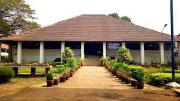
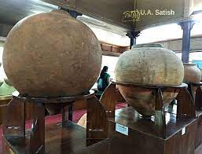
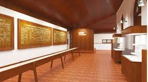
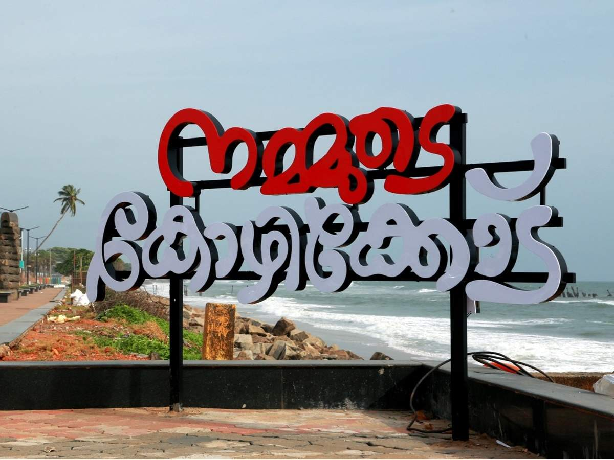
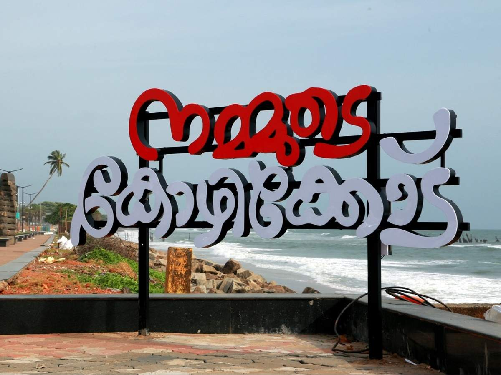
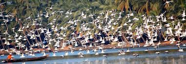
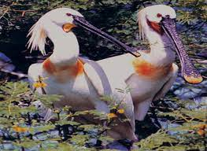
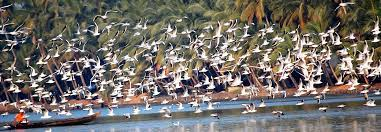
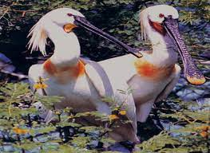

Kasaragod is often described as the land of forts and gods. The place is noted
for its ritual dance Theyyam, an art that blends dance, myth, drama, music,
art and theatrics. A performing art popular in the northern districts of Kerala,
Theyyam can be enjoyed in all its glory at Kasaragod.
In Theyyam, the performer is considered as a medium between the supernatural
and the mortal worlds. The Theyyam season gifts one with a grand visual treat
as different Theyyams take centre stage and perform the ancient art. Listen to
the many lores at Kasaragod, a land known for festivals, folk and visual art.
Yakshagana is one of the popular Indian theatre forms performed in Kasaragod in
Kerala and the South Canara districts of Karnataka. The art form is characterised
by extravagant costumes, elaborate make-up and unique stage techniques. The
stories are mostly based on episodes taken from epics like the Ramayana and
the Mahabharatha.
Yakshagana cannot be described as an exclusive folk, classical or rural art form
since it incorporates elements of all these in its narration and performance. The
art form involves dance, music and dialogues. Yakshagana literally translates to
‘the music of celestial beings,’ and the narration is accompanied by background
music played using percussion instruments. The singers and artistes perform in
sync with it to create this celestial musical drama.
Kasaragod is almost synonymous with the magnificent key-hole shaped fort, the
Bekal Fort which is a historic structure. Other forts include the Chandragiri Fort,
Hosdurg Fort, Kumbala Fort, Povval Fort, Kundamkuzhi Fort and Bandadukka Fort.
PAZHASSI RAJA ARCHAEOLOGICAL MUSEUM
Pazhassi Raja Archaeological Museum is a museum and art gallery in Kozhikode, Kerala. The museum has a rich collection of historical artifacts from 1000 BC to 200 AD.
The building that houses the museum was constructed in the year 1812 and was then known as East Hill Bungalow. The bungalow was converted to an archaeological museum in 1976. In the year 1980, the building was renamed as the Pazhassi Raja Archaeological Museum.
The museum has exhibits from the megalithic age and the Indus Valley Civilization. The exhibits include ancient pottery, toys, stone and other metal sculptures. Coins, Models of temples, Burial urns and umbrella stones (tomb stones of rulers) are part of the museums's collection. The museum also has a collection of war weapons used by British soldiers and the official caps of British and French soldiers.
The special collections of the museum include the Panchaloha idols and stone statues described as ‘War heroes'.



 

 


